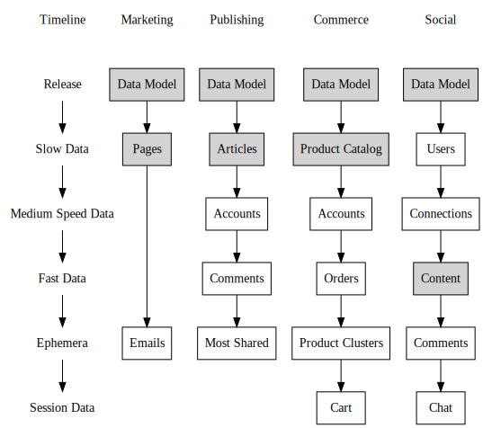
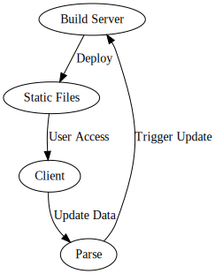

This article walks through the motivations driving and benefits of using a the Seed Architecture for building performant websites using Middleman, React, and a seperate API server such as Parse. The benefits are:
- You get full SEO with a heavy client JavaScript site without having to do crazy things with PhantomJS or meta fragments.
- Hosting and operations become both cheap and doesn’t require a support team.
- Scaling out the system is mainly a bandwidth problem, and secondarily a API scaling problem for a subset of behavior.
- The system breaks gracefully. If you overwhelm the API server the site is still available for browsing. Assuming that most usage of the sites are reads, this means that if you try to break the internet with Kim Kardashian’s ass maybe user login will slow down, but everything else is still available.
- You are able to build your front end using modern and clean fancy JavaScript technologies and don’t need to mess around with back-end coding.
Motivation
Sometimes I feel bad for what we make servers do. I will occasionally get a cringing feeling because we’re just not being very nice to the fancy machines around us. It’s similar to being in the car with someone who is learning how to drive a standard transmission and they grind the gears lurching the car into a stall. Ahhh!
I especially get this feeling when trying to make poorly built websites scale, e.g. wordpress sites that jam up the server when the slightest breeze of traffic wafts in, or Rails sites that are slamming the database with N+1 unindexed queries of largely static data. I really enjoyed the backstory to the back-end, but surely there has to be a better way to do this.
The reality is the computer is mostly doing the same exact thing, over and over again. For a lot of sites, there are only a few parts of the page that change based upon who is looking or when they are looking at it, and the bulk of what everyone seems is the same same same. The computer doesn’t complain about it but silently and stoically gets crushed under the load. But we can fix it. If we can break down the data on the page into different categories based upon its rate of change the bulk of the processing can happen at “compile” or “build” time, while only a small part of it needs to happen at run-time. And when a wave of people come in the servers are fully prepared to serve them up what they need.
There is so much computer power available both in desktop browsers and mobile browsers, and we should use it. If we can find a way to precompute the repetitive stuff and push the computing of the dynamic stuff out to the edges, we vastly lower the load on the servers which simplifies operations and scaling. There are some challenges with doing this; how to deal with SEO, increasing the “build” frequency to handle the “slow data” updates, and how to make it easy to do front-end development. We’ll go through a strategy below to address those challenges.
At the end of this meandering article we are going to have a way to build super scalable sites that give you SEO and full client side interactivity without having any servers (or at least only a small cheap one) which will nevertheless be able to scale to huge amounts of traffic cheaply.
The Outline
Let’s take a step back from how we normally build websites, and see what we can we do better based upon the challenges and current reality of operating sites:
- The first insight is that once your site is built and running, things change at a different rate than they do in development. The difference between tooling and run-time evaluation becomes more pronounced, and usage patterns of the data become clearly stratified. Even though we dump everything into the database, there are distinct classes of data that have different change patterns.
- The second insight is websites are about sitemaps, not about URLs. SEO thinks in terms of Sitemaps, and webapps thinks in terms of Routes, but if we could get the best of both worlds if we had a static build process that can pull data from a datastore and understands the concepts of a Sitemap and a Router.
- The third insight is that we need a templating language that can run equally well on the server and the client in order to keep developers sane and effective. The bulk of the application needs to be written using the same tooling.
- The fourth insight is that web services don’t need to be hidden behind the server, and with rich client apps we can consume them directly from the client.
I’ll walk through these in turn, deconstructing what they mean, and outline a way of building a prerendered website that will let you add all the fancy front-end features and full SEO support - all of the benefits of so-called database backed web-sites with content management systems and complex logic - that will be able to scale up quickly without any ops support, and be able to degrade gracefully under spikes.
Data changes at different rates
Lets take 4 classes of sites that we all build regularly:
- Marketing Sites, which after they launch rarely change, but may have a form that’s the beginning of a sales or conversion funnel. e.g. Mobile App landing pages, like getpyne.com
- Publishing Sites, which change when new content is created, comments get posted, or with changes in a list of most emailed or most read articles. Blogs, magazines and newspapers fit in here, though they have different user types and publishing schedules. e.g. Newspapers, like nytimes.com
- Ecommerce Sites, which change when the product catalog gets updated, orders are placed, inventory changes, cross and up sells are calculated, and people add things to their cart. e.g. teepublic.com
- Social Sites, which you only can access as a user, who your connections are, what gets added by other users, how you interact with that content, and any real time messaging between them. e.g. instagram.com
If the word social bothers you, just replace it with “all views are customized to the user and you need to log in to see anything”.
Let’s look at the rate of change of the different types of data on these sites:

Lets walk through this. A data model is the structure that all of the site data fits into. This represents the heart of what your database model, object model, and product design are all orbiting around. In the beginning of development this rapidly changes, but once the site is released changes are incremental and relatively rare. It’s easy to add functionality that doesn’t change the data model, but when you start making drastic changes, the nature of what you are building changes. Wordpress sites have pages, posts, categories and users, and if you try and jam in a product catalog then it becomes something different than a standard blog.
The next level is the bulk of the data on the site. Marketing sites have pages that change rarely. Publishing sites keep adding more articles, but these really don’t change that much and the bulk of the access pattern is read only. Commerce sites have product catalogs, and while merchandizers add and remove things from time to time, you largely expect to have things on there forever. Again this is mostly, though not completely, read-only.
For SEO to work correctly, the data in the gray boxes really should be rendered on the server. The Social Site is a bit of an outlier here, in that the root object is actually the user and the user’s content.
Let’s compare medium.com with facebook.com. Since the bulk of the content of Medium is accessable to anyone once it’s published. For this discussion its considered to be a publishing site rather than a social site. Bits and elements of the page change based upon who is accessing the site, but for the most part, everyone sees the same stuff. Facebook on the other hand looks different for each of the users. Individual items may be public, but the main consumption is through the feed and that’s based upon your friends and magic, so scaling has a whole different set of challenges. Probably involving something very esoteric.
Towards a more nerdy taxonomy of data
We can look at each of the elements on a website and break down the type of data source it came from:
- Static Data: Templates, Images, Fonts, Assets
- Structural Data: Pages, Articles, Product Catalog, Categories, “Content”
- Dynamic Data: Inventory, Comments
- Session Data: User names, Items in cart, Likes, etc.
As we go down the list, the rate in which these things change increases. Static data, as the name implies, rarely changes. Most of these are artifacts that come out of the development process or development tooling. Templates, for example, are created during the site development process and once the site is deployed they change only in response to bug fixes or feature requests.
Structural Data changes during the operations of the business, but not very frequently, and generally in response to things that are outside of the site per se. These include things like marketing material, product pages (less inventory information), categories, articles, and really the bulk of the content on a site. There are many reasons why you want to generate these pages using some sort of CMS, but rarely does this data change at run-time. This stuff doesn’t really need to be in a run-time database as such, but it’s convient to stick this stuff there if you have one laying around.
Dynamic Data is run-time data, that is to say, things that change as part of site operations, things like newsletter signups, orders and credit card transactions. Most User Generated Content falls in the this category, and depending upon your feature set, that could be the majority of the pages. Unlike Structural Data, where it’s merely a good idea to use a database, this is neccessarily stored in some sort of database.
Session Data is specific to the user and renders the page differently based upon their session, such as their name, whether they’ve added an item into the cart or not, etc. One of the things that makes straight page caching useless in practice is that the header is different on most sites based on if you are logged in or not, or if there are items in the cart. This gets persisted from page to page, but generally can get thrown away if the user wanders off.
What do we need to assemble a website
A website is a series of interconnected webpages. These pages are referenced by URLs, and the world of linking and SEO demands that these URLs return self-contained data so that you can deep link and get yourself found on the search engines. From the outside, it looks like:

The main entry point is the Sitemap. Conceptually, this is the overview of what can be found on the site. In a specific, SEO sense, a sitemap is a way of communicating to search engines the structure of your site so the search results can be better organized. But in a more general sense, the sitemap is a collection of all of the pages that make up the site.
The conceptual sitemap is a list of URLs that makes up your site. If you have a completely static Marketing site, then the sitemaps is just the collection of the static HTML files that is on the webserver filesystem. If you have a Publishing or Commerce site, the list of page urls depend upon the templates and the data in the database: even if they use the same template, every individual post has it’s own permalink or canonical URL, every product in the catalog has it’s own product detail page.
How urls are made on the inside
Lets take an example of a Commerce site, and how those URLs are generated. I don’t know the actual details, but lets look at how http://www.thinkgeek.com/product/1dbd/ could be generated.
From the inside of a website, it looks a little more like this:

A request comes into the server and the router determines what the user is asking for. In our example, since the path of the url is /product/1dbd/, the router looks at that and says “this is a product page” so let’s hand the request off to the product controller, which is the part of the code that knows about product stuff.
The controller would load up the product with the id 1dbd from the product catalog in the database, in this case Flux Capacitor USB Car Charger, which we can all agree is a necessary car accessory, and then use those details to fill out the product template.
The developers of this site didn’t code up each of these product pages, they coded up one template that represents all of the possible product pages that could be served up, they coded up a controller which knows how to pull the data from the database, and they wired up the whole thing using a router.
Sitemaps in static site generators
Our conceptual sitemap then is composed then of the set routes and database ids. The pages themselves are a cross product of the templates and the data for each of the pages:
Data x Templates = Pages
One of the things that’s exciting about Middleman is that it has a manipulatable concept of a sitemap.
The main thing that middleman does it to give front-end developers tooling to build sites, so you get the benefits of layouts and partials and SASS and helper methods and javascript minification all the other front-end tooling that you get with rails, but without needing to run a server. This lets you build fancy sites using the “normal” tools and you can still host them on github pages or divshot or a cheap server.
I’ve written about Middleman before:
If we want to pre-render the pages on the server at build time we’ll need both the routes as well as the “database IDs”. That gives us the list of files, and to generate the files themselves we’ll need the data for each specific page. In a basic way, this can be done using page proxies, excerpt from the Middleman docs:
["tom", "dick", "harry"].each do |name|
proxy "/about/#{name}.html", "/about/template.html", :locals => { :person_name => name }, :ignore => true
end
If you put that code in your config.rb it will create 3 pages in the middleman sitemap. (Found on http://localhost:4567/__middleman/sitemap/ if you have a local build running.) These files will be named /about/tom.html, /about/dick.html, and /about/tom.html, all generated from the /about/template.html template.
You could imagine instead passing in a complex object instead of a string. I touched on this in a basic way before in the Using Site Data as a Database.
In the simpliest form, you could dump your data in the data/ directory as books.json, and then put this in your config.rb to generate a product catalog:
data.books.each do |book|
proxy "/book/#{book.slug}.html", "/book.html", locals: { book: book }, ignore: true
end
As a proof of concept this works, but for a real system there would at least need to be a mechanism to sync the json from the database. For a more robust mechanism, remember that Middleman exposes a manipulatable concept of a sitemap to extensions.
Making front-end development easy
The story thus far is that we can split out data into static, dynamic, and session data, and we can use Middleman’s sitemap concept to generate static pages that can be served straight from S3 for all we care and it will all be indexable by Google. Sweet!!!
Now lets talk about how we can actually implement some of these templates.
We’ve broken down pages and split out when different parts will be rendered based upon our taxonomy of data. We’ve figured out a basic structure of how to render the Structural Data into the page, and now we need to figure out a good way to render the Dynamic and Session data in there too. And we also want to make this friendly for front-end developers. It’s not practical to have different templating engines and coding styles for bits of data that, during the development process, may turn out to be Site or Dynamic data.
This is different than using Varnish, CloudFront or Rails Page Level caching. In those scenarios, there’s no easy way to distinguish between elements on the page that everyone can see, vs elements that only specific people can see. It’s all or nothing.
For example, when Admins are logged into wordpress sites, they have a toolbar that regular browsers don’t see, so the page caching mechanisms need to have a way to subvert the caching process for logged in users. In this mechanism, we are going to send the same basic page data to all of the users, and then use client side javascript templating to change the DOM for the user based upon API calls that we make on their request.
Enter React
React is a javascript view framework from Facebook that focuses solely on the view layer. (We’re only going to be talking about the React part, and you can use flux or not, up to you.)
React works by enforcing a specific dataflow model on how components are rendered into the DOM. React lets you build heirachies of components that know how to render themselves and deal with different user actions. Much of what we’ve been talking about above thinking about page generation from a dataflow perspective, splitting the data up into different sources based upon their rate of change, and breaking up the page based upon how the data flows into it.With the goal of trying to prerender all of the stuff that’s the same for everyone.
React has a more focused dataflow model, working by passing in a component, data, and a DOM element, and it render out the HTML in that element. Components can be nested and have complex logic, and when you change the state of a particular component, all of the subcomponents will be refreshed as needed.
React has two concepts of data, one is called properties which is inherited from above and considered to be immutable. The other is called state, which is owned by a component and can be changed and passed to any children components. In React, this is about data ownership and to keep the page updates efficient.
Rendering React on the server side
One of the most interesting things about React is that you can render the HTML on the server side as well as the client side. Rendering on the server will include data attributes on the DOM so that the client Javascript can pick it up from there. In other words, if the data is available, you can render a template on the server or the client and it will work the exact same way. This is the one templating system that will be easy to move from Structural Data on the server to Dynamic Data on the client!
Obviously you need to have the data available on the server at render time, and you’ll pass it to the precompiler in a different way than you would on the client (one is passed to the JavaScript engine and the other is probably a result of a JSON AJAX call but all of the interaction and user logic remains the same), but outside of the wiring the business and interaction logic completely shared.
If you are using react-rails this looks like:
<%%= react_component('HelloMessage', {name: 'John'}, {prerender: true}) %>
<!-- becomes: -->
<div data-react-class="HelloMessage" data-react-props="{"name":"John"}">
<h1>Hello, John!</h1>
</div>
When you instantiate the javascript environment in the client, it will look for the data-react-* attributes and plug in your components there.
I’ve ported this functionality over to HappyFunCorp’s fork of the middleman-react gem that you can use in middleman.
Javascript and web services sitting in a tree
The trick is that React can also be rendered on the server, and then the javascript that’s run on the client side can pick it up from there. At this point in the process all of the Structural Data is available both in rendered HTML and also in the React components themselves, passed in as properties or state.
Our components are ready to go! They’ve either rendered Site Data from the server, or they can pull in Dynamic and Session Data in from an API, and use that to render the page. These components are written in the same way, using the same technology, so you don’t need to have a different style of building or constructing the front end, other than breaking down where the components get data from. Which ones get rendered on the server? Do they have enough data to render what they need? Do they need to have additional data that can be loaded in at client-run-time? Or is it all straight from an API?
Enter Parse
One of the benefits of this is that there are API-as-services out there, like Parse or Firebase. All of your data could live in these systems, and you can pull certain stuff out during the build process, and other data out at Runtime, and they handle both security, user accounts, and, more importantly, operational scaling support. From an ops perspective, you don’t need to do anything other than build the site and pay the hosting builds, and all of the tricky scaling stuff handled is by a third party.
<%= image_tag “seed_sequence.dot.svg”, class: “img-responsive” %>
Bringing back a build server

There still needs to be a way to get new versions of Structural Data onto the site. For this, we need to host middleman somewhere on a build server, and everytime Structural Data changes we need to trigger another build that pushes up the static content. Parse has afterSave triggers that could, for example, ping your build server to first pull down the data changes, and then push the code out.
Remember, this would only be for Structural Data updates, for example if an Admin user updated a product description. If a customer added an item to their cart or placed an order, this would all be dynamic data inside of the data store and managed on the client site. It would only update Parse, not the site that everyone would access.
Advantages
The advantages of this way of building things are:
- You get full SEO with a heavy client JavaScript site without having to do crazy things with PhantomJS or meta fragments.
- Hosting and operations become both cheap and doesn’t require a support team.
- Scaling out the system is mainly a bandwidth problem, and secondarily a API scaling problem for a subset of behavior.
- The system breaks gracefully. If you overwhelm the API server the site is still available for browsing. Assuming that most usage of the sites are reads, this means that if you try to break the internet with Kim Kardashian’s ass maybe user login will slow down, but everything else is still available.
- You are able to build your front end using modern and clean fancy JavaScript technologies and don’t need to mess around with back-end coding.